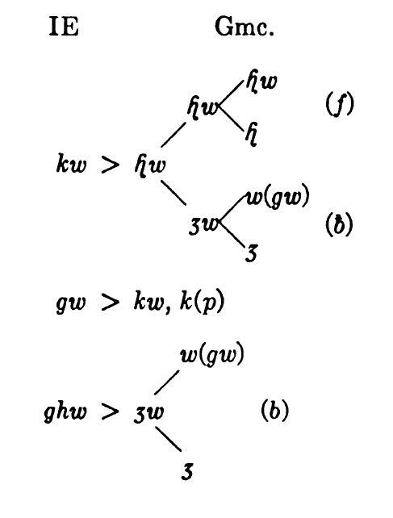

The Semi-Vowels, j w, are essentially vowels as to articulation, since the air passage is, in general, somewhat narrowed, but not suffiiently obstructed to characterize them as spirants. As reduced forms of diphthongs, they appear as pure vowels,i u (39); on the other hand, they tend to be narrowed to spirants or even stops, as in *jugóm 'yoke', Gk.
- j: L.
iugum , Gk.ζυγόν , Sk.yugám , Go.juk 'yoke' - w: L.
vestis 'dress', Gk. (verb) 'εννυμι < ϝεσνυμι, Sk.vastra , Go. (verb) wasjan 'dress'.
THE GERMANIC CONSONANTS
A. The Consonant Shift
'Sound Shift' was the term coined by Jacob Grimm in the second edition of his Deutsche Grammatik (1822) to designate a very large complex of interrelated phonetic changes through which the Germanic system of stops and spirants developed from the corresponding IE consonants. It is probably the most comprehensive group of sound changes that has been observed in the history of any language. But the individual changes are of such homogeneous character that finally the Germanic consonants constitute practically the same 'phonetic pattern' as the Indo-European consonants, especially if traditional bh dh gh are interpreted as voiceless spirants. Every single genuine consonant (cf. 13, 14) had altered its mode of articulation, but the fundamental types of the Indo-European and the Germanic consonants are the same.
Rarely in German books, but rather frequently in English and French works, the whole complex of the consonant shift is termed 'Grimm's Law', 'loi de Grimm'. Recently protests have been voiced against that term (e.g. by Jespersen, Language 43, and by R. C. Boer, Oergermaansch Handboek 116). The substance of the facts has been summed up by Collitz, A Century of Grimm's Law, Language 2. 174 ff.:
Grimm was by no means the first scholar to observe that in the Germanic languages consonants are often at variance with those of the cognate languages. Such discrepancies were especially noted and commented upon by students of Gothic from Franciscus Junius to the Swedish Professor Johannes ab Ihre and James Jamieson, the author of a well-known Etymological Dictionary of the Scottish language. Yet for a long time observations to this effect remained isolated, and amounted to little more than a mixture of truth and errors.
Matters, however, took a different turn when, two years after the publication of Bopp's Conjugationssystem der Sanskritsprache, the great Danish philologist Rasmus Rask brought out his prize essay on the origin of the Icelandic language. Like Franz Bopp, Rask is one of the pioneers in the field of Indo-European philology. He began to investigate in a systematic manner the changes which the Germanic consonants had undergone in comparison with those of the cognate languages, and arrived at results that have proved — with few exceptions —reliable. His results are of great interest to us, the more so, as they have undoubtedly exercised considerable influence on Jacob Grimm's work. Grimm became acquainted with Rask's essay when he had nearly finished seeing the first edition of the first volume of his Grammar through the press. He hastened in the preface to that volume to voice his obligations to the author of the essay in the broadest and warmest possible manner. 'Meanwhile Rask's excellent prize-essay has furnished far-reaching information as to the many points of contact existing between the Germanic and the Lettic, Slavic, Greek, and Latin languages.' As far as the mere facts of the first Germanic shift are concerned, Rask, no doubt, was acquainted with most of the single paragraphs of Grimm's Law, and we may readily understand how the impression could obtain here and there that the law had actually been discovered by him. Nothing, however, could be a greater injustice to Grimm. Granted that Rask observed several consonant changes that play an important part in the shifting, we cannot possibly speak of Rask's Law in the singular....With Grimm the stress lies decidedly on the inner reason connecting the various parts of the shifting. He felt able to set forth a single law incorporating all its phases. His notion of such a law was based on the observation of a threefold uniformity:
(1) the second or High German shifting proceeds in general on the same lines as the first or common Germanic shifting;
(2) one and the same general formula is applicable to the various sets of consonants, whether they be labials or dentals or gutturals; (3) the shifting proves to imply a fixed sequence of the principal forms of the shifting, based on the arrangement of the three classes of consonants involved in the order of media, tenuis, aspirata....
Such then is Grimm's Law: not merely a set of observations on consonant changes resulting from the first Germanic shifting, but rather a general theory as to the mutual relation between certain consonant changes, occurring as a rule in combination with each other. However much Grimm may be indebted for details to his predecessors, the law remains his own, and is something very different from what others had noticed beforehand.
16. The Fundamental Principle.
The articulation of consonants is conditioned by two counteracting factors: The current of air issuing from the lungs, and the tension of the vocal cords and the muscles of the mouth (tongue, lips, velum, cheeks) intercepting the flow. In the case of stops, the breath is completely checked in the mouth-- by the lips in the case of labials (p b), by the tongue in the case of dentals and 'gutturals' (t d; k g). In the case of voiced sounds it is checked in the glottis, by the close approach of the vibrating vocal cords. In some languages, e.g. French, the voiceless stops, p t k, are frequently pronounced with simultaneous closing of the glottis (glottal stop), so that the audible articulation is due to the release of the muscular tension of tongue or lips. We cannot know whether the articulation of IE voiceless stops was originally the same in all parts of the Indo-European territory. It is quite possible that some of the dialects had the glottal stop articulation, but we cannot postulate this for general Indo-European, in spite of Meillet, Caractères généraux des langues germaniques 36 f. For Germanic, we must assume open-glottis articulation, and it matters little whether it represented there an original type or a later development.
In the case of spirants, the oral occlusion is not complete, so that the flow of air is not stopped, but only impeded, to the extent of causing an audible friction between the lips (or lower lip and upper teeth) or between the tongue and the teeth, or the tongue and the roof of the mouth. Again, before passing through the mouth the breath may have been partly intercepted by the vibrating vocal cords. Thus, there result either the voiceless spirants f þ ɧ or the voiced spirants ƀ ð ȝ.
Fortes and Lenes.
Both stops and spirants vary as to intensity of expiration and muscle tension. Generally speaking, voiceless stops and spirants tend to be fortes, i.e., they are articulated with greater force, and voiced sounds are generally lenes, i.e., the speech organs are relatively relaxed. But a voiced sound can be (relatively) fortis, e.g., bb gg in Ger. Ebbe, Flagge, while a voiceless consonant is sometimes lenis, as South German b d g. In general, it is not necessary to indicate the difference, but where this is required, the following symbols may be used:
- p t k for pure voiceless fortes stops, as in French pas, tasse, cas.
- p' t' k' for the corresponding aspirated sounds, as in North German Pass, Tasse, Kasse.
- ḅ ḍ ġ for voiceless lenes, as in South German bat, da, gar.
- f þ ɧ for voiceless fortes spirants, as in Ger. offen, E. thin, Ger. machen.
- φ θ χ for voiceless lenes spirants, as in Ger. Ofen, E. cloth, North German sagt.
- b d g are the voiced stops, as in E. bid, did, give.
- ƀ ð ȝ are the voiced spirants, as in Bav. aber (Span. deber), E. then, North German Tage.
χ ȝ are really the symbols for velar sounds, but generally may also be used for the corresponding palatals, since, in the Germanic languages, the two groups practically amount to one phoneme. But where necessary, palatal articulation may be indicated by ç j: Ger. nicht, liegen = [niçt, li:jən] (but Nacht = [naχt], lagen = [la:ȝən].
All Indo-European stops and spirants pass through a consistent system of changes during the early history of the Germanic languages. In concrete terms, defining merely the actual result, its general course may be described as follows:
In the case of stops, the breath is released.
In the case of spirants, the breath is checked.
Both release and check follow the direction of the breath passing from the lungs, i.e., either process takes place first in the glottis, then in the mouth, as far as this is possible. An occlusion is opened in the case of stops, and a passage is closed in the case of spirants, but of course an open glottis cannot become opened, and a closed mouth cannot become closed. For instance: t is a voiceless stop. The glottis is open. Consequently the breath is released between tongue and teeth, and þ results. This being a voiceless spirant, the open glottis is closed, so that þ changes to ð. This voiced spirant requires an occlusion in the mouth, thus changing to d, a voiced stop, which then, by release in the glottis, becomes t. Doubtless we must assume certain intermediate steps as phonetic probabilities. Thus, t was probably in Pre-Germanic, as elsewhere in Indo-European, a pure stop, and at first the air pressure increased so that the aspirate t' resulted as a transition between t and þ; possibly there existed for a certain time, and in certain positions, a further transitional step, the 'affricate' tþ. þ was probably originally a fortis, being articulated with that force of expiration and counter acting muscle tension that had led to its formation. But this double maximum of intensity was transitory; the sound became lenis. Between d and t we are bound to assume as a phonetic interpolation the voiceless lenis ḍ. Therefore, the complete series of these changes is the following:
t > t' > þ > ð > d > ḍ > t
Grimmm's description of the process is generally represented in this form
M = media (b d g)
T = tenuis (p t k)
A = aspirata; in this term Grimm includes both the Gmc. spirants f þ ɧ and the Gk. 'aspirates', as representatives of what are now termed IE bh dh gh. This nomenclature, while phonetically inaccurate, is natural enough in a chapter that is inscribed 'Lehre von den Buchstaben', and in point of fact there is a certain practical simplicity in the application of this diagram.
The following diagram may, in a sense, be called an adaptation of Grimm's diagram to phonetic facts, but it is correct only if the IE 'sonant aspirates' are assumed to have been voiceless spirants in lenis articulation (the arrows denote the direction of the changes; the figures correspond to the arrangement of the following table):
Anticipating sections 18-21 and 24-27, we obtain on the basis of this diagram, the following chronology of the consonant shift, examples being taken from the dentals, since their shift is carried farthest:
I. Pre-Germanic: θ (= dh) > ð > Gk.
II. Germanic: B.C., t > t' > þ— L.
III. Germanic: A.D., 'Verner's Law'— þ > ð— Gk.
IV. Germanic: A.D., d > t— L.
V. Intermediate: ð > d— Gmc. *ðurā- > Go.
VI. High German: t > z— Go.
VII. High German: d > ḍ (> t)—Go.
VIII. 'German: þ > ð— Go.
IX. 'German': ð > d— OHG.
The Cause and Time of the Consonant Shift are moot questions but it is probable that they bear a relation to each other. It is hardly by mere accident that this strikingly comprehensive and homogeneous group of phonetic changes is contemporaneous with what may justly be called the most momentous national movement in history: the Germanic Migrations ('Völkerwanderung'), which began at least as early as the second century B.C., perhaps much earlier, and ended during the sixth century of our Era, so that its whole duration was not much less than a millennium.
The estimates of the Time of the consonant shift show a wide difference of opinion. Kluge represents one extreme (Urgermanisch 52
Step I: IE bh dh gh (= φ θ χ) became b d g in all IE languages except Italic, Hellenic,' and Indie. In Germanic, where the transition is incomplete, an intermediate stage ƀ ð ȝ is certain, in the other languages that have b d g, such a phonetic interpolation is very probable. This transition is such a frequent and obvious physiological process that it does not entitle us to consider the b- d- g-languages as a prehistoric unit. The change occurred independently, but it is not a part of the Germanic consonant shift proper, although it must be included in its consideration. It must be ascribed to 'Pre-Germanic' times, between the separation of the Germanic from the Italic group and the actual consonant shift, and therefore, at a random estimate, may be said to have taken place around 1000 B.C.
Steps II and IV : The changes p t k > f þ ɧ and b d g > p t k represent a surplus of expiration over the counteracting muscle tension, either in the mouth, or in the glottis. They seem to be connected, both as an effect and as a contributing cause, with the Pre-Germanic accent change: the IE accent was musical (pitch accent), and the Gmc. accent was dynamic (stress accent) (43). This view was first expressed by Hirt, Indogermanen, 2. 616, and repeated by R. C. Boer, Neophilologus 1. 103, and Oerg. Hb. 136 f. The change of p t k to f þ ɧ cannot have been a sudden transition, but implied a gradual strengthening of expiration that extended over generations, perhaps over centuries. If we try to indicate, not its beginning, but its completion, Much's date, the third century B.C., would seem acceptable. The unvoicing of the voiced stops must have been still later; here at least we have fairly definite evidence from loan words: words like Go.
Step III : Verner's Law (20) must have been almost contemporaneous with Step IV and may be ascribed to the first generations of the Christian Era-— an entirely tentative estimate.
Steps V to IX occurred during the individual history of the several Germanic languages, although at least Step V started in Germanic times. In these changes the following facts of relative chronology become cletfrly evident:
(1)The 'Intermediate Shift', i.e., the change from Prim. Gmc. ƀ ð ȝ to b d g, took place sooner in initial than in medial or final position. This change implies an increase in muscular tension, which normally is greater initially than medially. Some Romance languages exhibit a corresponding change in the opposite direction, from stop to spirant. Go. [siƀun] is the earlier form, and OHG.
The recognition of the Germanic voiced spirants is due to Braune, Btr. 1. 1 ff. (Zur Kenntnis des Fränkischen und zur hochdeutschen Lautverschiebung). The view of Sweet, Meillet, Huchon, that Germanic had voiced stops, which became spirants medially and finally, is clearly wrong.
(2) In the 'High German Shift', p t k became spirants in medial or final position, but affricates (pf ts kh) in initial or post-consonantal position: E. open, eat, make =
(3) In all phases of the Intermediate and High German Shifts dentals change first and most completely, labials later and less, and velars last and least. This is particularly marked in the High German Shift of b d g to p t k. Everywhere in Upper German, d became t, and this change extended also over the larger part of Middle German; the changes b > p and g > k occurred only in Upper German, but the former was much more far-reaching than the latter. Phonetically, this seems to mean that the ratio of change is proportional to the relative agility of the articulating organs: the tip of the tongue is the most agile, the back of the tongue and the velum are the most inert of the three articulating organs. It is not quite impossible that the relative frequency of sounds may also have played a part, at least in the case of the dentals, which are the most frequent among consonants, but on the other hand, velars are more frequent than labials, which speaks against that assumption.
Residuary Forms ('Restwörter'). In general, phonetic laws are carried through 'without exceptions' (cf. 9), but phonetic laws are limited in their duration. For instance, in Greek intervocalic s disappeared: γενεσος > γένους. Later, intervocalic t became s under certain conditions, and this new s remained: *λυτις > λύσις. In Germanic as well as in other languages it happened occasionally that a phonetic law came to a standstill before it had covered the entire vocabulary of the language. Especially connectives and other words of relatively neutral semantic contents appear as such linguistic residue. Thus in Gothic, the shift from d to t did not affect the prepositi
The very existence of such residuary forms ('Restwörter' ; cf. Prokosch, Mod. Phil. 26. 459 f.) seems to confirm the theory that the consonant shift had its origin in the emphatic articulation of stressed words and syllables, and this is in keeping with the order described above, in which the consonants changed according to their place of articulation and their position in the word. The 'Germanic Consonant Shift' took place in pre-historic times and was virtually completed at the time to which our earliest records belong. But the 'Intermediate' and the 'High German' shifts belong to a period of expansion and migration, the main events of which are sufficiently well known to establish a parallelism with the linguistic changes of that period, and it is fairly safe to assume that the pre-historic developments would show a similar parallelism if the details could be ascertained.
The Cause of the consonant shift is even more problematic than its time. Jacob Grimm gave a purely psychological explanation which, in spite of the Romantic exuberance of its wording, may fundamentally contain a good deal of truth. He sees in the consonant shift (the Ger manic as well as the High German) an expression of the impetuous character of the Germanic tribes during their early history. H. Meyer(-Benfey) advanced the theory that at least a large part of it was due to an increase in the force of expiration, brought about by life in mountainous districts: the Scandinavian highlands for the Germanic, the Alps for the High-German Shift. His theory has found considerable approval, expressed, for instance, by Osthoff in his lectures, and by Collitz, Language 2. 181. Lately, the 'ethnological theory' seems to be the leading view. According to this, the Germanic as well as the High German Shifts are due to language mixture between Pre-Germanic or Germanic, and Celtic, Finnic, Rhaeto-Etruscan, or the speech of an autochthonous population of North-Central Europe.
In the author's opinion, H. Meyer's view is not without a measure of intrinsic probability. But his factual arguments, showing similar phonetic processes among other mountain tribes, are scattered and insufficient. Moreover, his two chief postulates are highly problematic : If the original Germanic home was on the Scandinavian peninsula, it was not upon the high fjällar, but in comparatively level southern Sweden. This speaks against Meyer's explanation of the Germanic shift. As to the High German shift, Braune's assumption that it started in the Alps (see below) is a mere hypothesis without historical foundation. Should it happen to be correct, it would be difficult to understand why the Romance languages of the Western Alps, or the languages of the Caucasus or the Himalaya do not show any similar phenomena. Meyer's physiological explanation of certain parts of the consonant shift as the result of increased expiration is a valuable supple ment to Grimm and Raumer, but this increase cannot have been due to life in the mountains.
The varieties of the ethnological theory are too numerous to discuss in detail. In spite of some brilliant observations (especially by Kauffmann and Naumann) all of them are weak in principle. On the one hand, voiceless stops are supposed to change to spirants under the influence of absorbed languages (none of which, as far as is known, possessed such sounds to a similar extent), and on the other, for the same reason, voiced stops became voiceless. Moreover, the very multitude of guesses is self-defeating. The phonetic basis of Finnic, e.g., differs radically from that of Celtic; about Rhaeto-Etruscan (if such a language group existed) we know very little, and about the mythical autochthonous language of North-Central Europe nothing at all. Finally, the thorough consistency of this wide complex of phonetic changes is a decisive argument against foreign influence as a determining cause. Any one of the individual steps might, by some stretch of imagination, be ascribed to such— say, the spirantization of occlusives to Celtic,
The following attempt at a solution of the problem is far from adeuate, since our knowledge of the historical foundations is incomplete; but it tries to avoid the worst fallacies of the geographical and ethnological theories; the historical details (based essentially on Lamprecht's Deutsche Geschichte) are given by Prokosch, Die deutsche Lautverschiebung und die Völkerwanderung, JEGPh 16. 1 ff.
(1) The Consonant Shift is one continuous process, the duration of which is approximately parallel to that of the Germanic Migration in the wider sense: it began several centuries B.C. and ended about 500 A.D. The Second or High German Shift continues or duplicates in a consistent way the phonetic processes of the Germanic Shift.
(2) The basic trend of the consonant shift developed in and near the Germanic homeland: Scadinavia, i.e. the West Baltic Basin, and Northern Germany, between Elbe and Oder. In accordance with 7, Chronology and Drift, it ceased in each tribe soon after the final settlement in the new home. Accordingly, as the following sections will show, the scope of the shift in each dialect corresponds to the relative period of colonization.
(3) These two statements are based on facts and are merely descriptive of what actually took place. But what was the cause of this 'Basic Trend'? Here we can offer only a hypothetical construction. Linguistic change is largely due to imitation. Every individual departs at times or always from the average norm of speech. To an extent these personal deviations are the result of character and circumstances. Leading personalities are apt to be imitated in their manners, their dress, their speech: they set fashions.
The Germanic Migration was the result of overpopulation of comparatively infertile land, aggravated in the northwest by inundations, and possibly in the east by pressure from Slavs and other nations. Emigration brought temporary relief for some districts, but in general the necessity of emigration continued in the homeland through these centuries. Every expedition required years of preparation and organiszation, and such continued storm and stress could not fail to develop leaders whose personalities influenced the 'behavior' of their followers. It can easily be imagined that in personalities of this type will and contents predominated over reflection and form: the influence of a Boiorix or Ariovistus upon speech as a part of behavior differed from that of a Petronius or Marcus Aurelius. Not only the consonant shift, but also the accent shift, the vowel shift, the Germanic verb system, all reflected a predominance of elements of contents over elements of form.
At any rate, the consonant shift appears to stand in chronological and causal relation to the social, economic, and emotional background of the Völkerwanderung. These chronological facts are certain (cf. 7): East and North Germanic, the oldest branches from the point of view of settlement in new homes, show only steps I-IV and a small part of step V. West Germanic north of the Benrather Linie (6 e) continues step V. High German, particularly Upper German, in the most recent Germanic settlements, completes step V and adds steps VI and VII. The parallelism is too close to be accidental.
The Germanic Shift
The IE Spirants, φ θ χ conventional bh dh gh, appear in Germanic as voiced spirants, ƀ ð ȝ: Step I. For their origin and transcription, cf. 10 (4). It is generally asserted that the shift ph th kh > f þ ɧ and that of bh dh gh > ƀ ð ȝ are perfect phonetic parallels. This is by no means the case, in spite of the deceptive appearance of the Schriftbild. In Germanic, voiced and unvoiced sounds move in opposite directions, although the underlying 'drift' is the same. If IE bh dh gh had existed and had developed in accordance with the general trend, they would have become ph th kh— a transition that is generally, although perhaps wrongly, assumed for Hellenic and Italic, but which certainly did not take place in Germanic.
If we accept φ θ χ as tentative reconstructions, we find complete consistency. In accordance with the 'Fundamental Principle' (16) the breath is checked in the glottis, and Gmc. ƀ ð ȝ result, exactly as later in step III. This stage is generally assumed for Primitive Germanic ('Urgermanisch'); cf. especially Braune, Btr. 1. 1 ff. But even there the transition to stops had begun, at least in gemination and after nasals: theoretical ƀƀ ðð ȝȝ, mƀ nð ŋȝ (24) appear everywhere as bb dd gg, mb nd ng. The reason is obvious: gemination implies increased tension, and nasals are essentially stops, so that assimilation results. Probably also initial b d are to be ascribed to the Germanic period, although possibly some very early Runic inscriptions indicate spirantic pronunciation: ƀarutʀ, Bjorketorp =
--
φ = bh:*bher-, Go.
*bhātēr, Go.
*nebh-,
θ = dh:*dhē-, Go.
*roudho-, Go.
*medhjo-, Go.
χ = ĝh:*ĝhḷtó, Go.
*ĝheu(d)-, Go.
ĝheŋgh-, Go.
*weĝh-, Go.
χ = gh:*ghosti-, Go.
*ghorto-, Go.
*steigh-, Go.
χw = ghw: *ghwṇtjā 'killing',
Note: The pronunciation of b d g in the various Germanic languages is discussed in 24. In the Gothic examples given above, ð is used for medial d in Gothic spelling, since its spirantic character is quite certain. After this, d will be used (fadar, instead of faðar).
The IE Voiceless Stops, p t k, became Gmc. f þ ɧ, with p' t' k' as intermediate stage: Step II. According to 16 c these spirants were originally fortes, but in historical times they are, relatively, lenes. This is apparent from the following facts: In Gothic they remain voiceless in all positions (broþar, wulfis 'wolf's', taihun 'ten'). In Old Norse and Old English, f and þ in voiced surroundings become voiced, which presupposes lenis articulation; in both languages, the letter f is used for f and v, and þ and ð are used indiscriminately for the voiceless and voiced spirants; cf. 27 b:
p: *pətēr, Go.
*pōd-, Go.
*penkwe, Go.
t:*treies, Go.
*tū, Go. ON
tod, Go.
k^:*k^mtóm, Go.
*dek^ṃ, Go.
*deik^-, Go.
k:*kən-/kōn-, Go.
*kāro-, Go.
*leuk-, Go.
kw:*kwod, Go.
*sekw-, Go.
*leikw-, Go.
There is no Germanic evidence for IE aspirated voiceless stops.
Note: After voiceless spirants, i.e., Gmc. f þ ɧ and s, this shift did not take place, apparently because the surplus expiration was absorbed by these sounds. In a sense, we can speak of dissimilation: L.
Verner's Law
After Step II of the Consonant Shift, Primitive Germanic, like Primitive Indo-European, had four voiceless spirants, namely, f þ ɧ < IE p t k, and s = IE s. In voiced surroundings, these tend to become voiced, ƀ ð ȝ z. The same trend is frequently found in other languages. Thus IE bh dh are voiceless in Umbr. tefe, rufru, Osc. mefiai, but voiced in L.
Starting with this observation, Verner formulated the following law: The Germanic voiceless spirants remained voiceless, if the preceding syllable had the IE accent, but became voiced in voiced surroundings. if the preceding syllable had been unstressed in IE times. (Sievers: 'Im Nachlaut der indogermanisch unbetonten Silbe'). Paul (Btr. 6. 538) gave the following wording: 'Die nach Vollzug der germanischen Lautverschiebung vorhandenen vier harten Reibelaute h þ f s sind ausser in den Verbindungen ht hs ft fs sk st sp erweicht, wenn der nachst vorhergehende Sonant nicht nach der idg. Betonung den Hauptton trug.'
-—This is Step III of the Consonant Shift.
We find the same sound change in Modern Englist in such forms as exámine, extért (with gz) as compared éxit,éxercise (with ks). In spite of this well established parallel, the phonetic explanation is difficult. Probably we have to assume the following: In medial and final position, the Germanic spirants were relatively weaker than initially; their articulation may have approached that of IE φ θ χ (bh dh gh), but, as in E. exit, it was relatively stronger at the end of a stressed syllable than after an unstressed syllable, as in E. exert. In the latter position, the lenis spirant was readily affected by the vocal vibrations of the surrounding voiced sounds, and thereby became voiced. In a later period, this voicing of spirants in voiced surroundings became general, regardless of accent. In spite of the title of Verner's article, Verner's Law is not an exception to the Consonant Shift, but an acceleration of it. (Collitz, Language 2. 177: 'The instances covered by Verner's Law constitute an exception to Grimm's Law only in the sense of an accelerated action of the latter, caused by the IE accent.') The change of voiceless to voiced spirants follows the general trend of the Shift in accordance with the Fundamental Principle given in 16 d. Spirants being open consonants, an occlusion must take place; the glottis being open, this occlusion must be formed in the glottis. After an originally unstressed syllable, the lenis development, and accordingly the voicing, took place sooner than in the relatively strong position in the transition from a stressed syllable. But gradually this voicing becomes general. Thus, Verner's Law is a typical instance of the very frequent gradual spread of a phonetic law. It starts under the most favorable conditions, but spreads until it has covered the whole field. In the second Shift and in Early English (partly late Old English, partly early Middle English) we find an apparently different, but really analogous process in the treatment of th. It became voiced (in voiced surroundings) in medial position without exception (clothes, bathing), but initially only in words which are relatively unstressed in a sentence, or which have little semantic function: the, that, this, then, there, thou, thee, thine. Here the whole word is 'lenis', and therefore the weak spirant is voiced; in the case of Verner's Law, the spirant was lenis because it continued the degree of strength of the preceding syllable.
-—Scandinavian shows a similar development, beginning in the thirteenth century: Initial þ, appears regularly as t (þing > ting), but as d in the same type of words that have ð in English (de, dem, den, det, der, du, dig, din, etc.).
Note: R. C. Boer, Neophil. 1. 110, and Oerg. Hb. 123 f., ascribes Verner's Law to double accentuation in Primitive Germanic. He assumes that the syllable that had been stressed in IE times, but became unetressed through the Germanic accent change (48), retained higher pitch. For instance, IE pətēr > Gmc. faþǣr > faðǣr would, in Germanic, have a dynamic accent of the first syllable, but higher pitch on the second syllable. Inherently, there is nothing impossible in this; we do find similar conditions in modern Swedish and Serbian. But the explanation falls short of explaining Verner's Law in the case of final consonants, as well as the analogous processes of later periods in English, Scandinavian, and Old High German (see 27).
A similar hypothesis had been advanced by R. Gauthiot, MSL 11. 193-7; Prokosch, JEGPh. 11. 1 ff., tries to show that Verner's Law can be explained on the basis of dynamic accent. Cf . also Kip, MLN 20. 16 f.
---
Unless Boer's theory be accepted, Verner's Law must have preceded the Germanic accent shift (43). This would make the first or second century A.D. the most probable time. At that period, the separation of the Goths from the western and northern Germanic tribes was under way. Now, in Gothic, Verner's Law is much more rare than in the other. Germanic languages (see below). It is commonly assumed that it had existed there to the same extent, but was 'leveled out'. But it is more probable that Hirt, HU 1.148 (cf. also 155) is right when he says 'Ich halte es fur unmöglich, alles dies auf Ausgleichung zurückzuführen.' He assumes that Gothic had carried out the accent shift sooner than the other Germanic languages, so that only a comparatively small group of rather isolated words were still subject to the law. That is quite possible, and I have held a similar view for many years. The accent shift, like other phonetic laws, was a gradual process. There must have been a time when individual speakers would, in the same word, use sometimes the Germanic, sometimes the Indo-European accent. This was favorable to the development of a semiconscious differentiation between the two accent types, resulting in Verner's Law.But at approximately that time the phonetic drift in Gothic was retarded through its separation from the main stock (cf. 7 and 9). In general, the spirant remained voiceless in words where the preceding syllable was stressed in some forms, unstressed in others. But it was voiced where the preceding syllable was unstressed throughout. Thus, Gothic has wairþan, warþ, waurþum, waurþans, although the root was originally unstressed in the last two forms. But Verner's Law did take effect in words like sibun < *septḿ, fadar < *pətēr, where the suffix accent had become fixed in IE or very early Gmc. times. Of course, even so we may speak of a sort of leveling, but only in the sense that the analogy of other forms of the same word prevented the change of waurþun to *waurdun. —The instances of Verner's Law in Gothic are listed by F. A. Wood, Verner's Law in Gothic, 1895.
Due to later consonant changes and to peculiarities of spelling, Verner's Law is not equally traceable in the several Germanic dialects. The table below shows that, in general, only Gothic, Old Saxon, and Old High German are apt to give evidence of V.L. in all four places of articulation. ON distinguished neither the labial nor the dental spirants; OE did not distinguish the labials. However, the table does not take into account some special cases, such as the change of
| Gmc. |
f |
= |
Go. |
f |
ON |
f |
OE |
f |
OS |
f |
OHG |
f |
| " | ƀ |
" | b |
" | f | " | f | " | ƀ |
" | b |
|
| " | þ |
" |
þ | " | þ ð |
" | þ ð |
" | th |
" | d |
|
| " | ð |
" | d | " | þ ð |
" | þ ð |
" | d |
" | t | |
| " | ɧ | " | h |
" | - | " | -, h |
" | h |
" | h |
|
| " | ȝ |
" | g | " |
g | " |
g |
" | g | " | g |
|
| " | s |
" | s | " |
s | " | s | " | s | " | s | |
| " | z | " | z | " | r | " | r | " | r | " | r |
In the following instances leveling, including the assumed retention of voiceless spirants in Gothic, is indicated by brackets. For a more complete list, see Streitberg, UG 127 ff., and Noreen, UL 124 ff. Cf. also 63.
| Non-Gmc. | Go. | ON | OE | OS | OHG | ||
|---|---|---|---|---|---|---|---|
| f > ƀ | Sk. | tarpáyati | þaurban | þurfa | þurfan | thurban | durfan |
| Gk. | επτά | sibun | siau |
seofon | sibun | sibun | |
| L. | caput | haubiþ | hǫfoþ | hēafod | hōbid | houbit | |
| þ > ð | Gk. | εκατόν | hund | hund | hund | hund | hunt |
| L. | altus | alds (noun) | aldenn | eald | ald | alt | |
| Gk. | πατήρ | fadar | faþer | fæder | fadar | fater | |
| ɧ > ȝ | Gk. | δεκάς | tigus | tiger | -tig | -tig | -zug |
| L. | dūco | [taúhans] | togenn | togen | gitogan | gizogan | |
| L. | cunctārī | [hāhan] | hanga | hangian | hangon | hangēn | |
| s > z | L. | auris | [ausō] | eyra | ēare | ōra | ōra |
| Osc. | mais | maiza | meire | māra | mēro | mēro | |
| L. | -ōrum | þizē | þeira | þāra | thero | dero |
Grammatical Change is primarily the effect of the application or non-application of Verner's Law in different inflectional forms of the same word, due to the movable accent of Indo-European (43), but in a wider sense the term is often also applied to the alternation of Gmc. voiceless and voiced spirants in different words of like formation, or in the same word in different Gmc. languages. To the first class belongs, e.g., OE pres. cēosan 'choose', past part. coren; to the second class, on the one hand, Go.
The following types of Grammatical Change are especially important:
(1)For the principal parts of the strong verb the standard view assumes that in all seven classes the first two forms (pres. and singular of the pret.) had in IE root accent, the other two (plural of the pret. and past part.) suffix accent. As shown in 63, this is probably true only for the first three classes, but through analogical transfer Grammatical Change does occur, more or less sporadically, also in the fifth, sixth, and seventh classes. Gothic retains (or restores?) the voiceless spirant in the regular strong verb, but Grammatical Change is found in some forms of the preterit-presents.
Instances (analogical forms are given in brackets):
| I. | Go. | leiþan | laiþ | [liþum] | 'go' |
|---|---|---|---|---|---|
| ON | līþa | leiþ | liþom | ||
| OE | līþan | lāþ | lidon | ||
| OS | līthan | lēth | lidun | ||
| OHG | līdan | leid | litum | ||
| Go. | sneiþan | snaiþ | [sniþum] | 'cut' | |
| ON | snīþa | sneiþ | sniþom | ||
| OE | snīþan | snāþ | snidon | ||
| OS | snīthan | snēth | snidun | ||
| OHG | snīdan | sneid | snitum |
| II. | Go. | kiusan | kaus | [kusum] | 'choose' |
|---|---|---|---|---|---|
| ON | kiōsa | kaus | kørom | ||
| OE | cēosan | cēas | curon | ||
| OS | kiosan | kōs | kurun | ||
| OHG | kiosan | kōs | kurum | ||
| Go. | tiuhan | tauh | [tauhum] | 'pull' | |
| ON | tiōa | - | - | ||
| OE | tēon | tēah | tugon | ||
| OS | tiohan | tōh | tugun | ||
| OHG | ziohan | zōh | zugum |
| III. | Go. | wairþan | warþ | [waruþum] | [waurþans] | 'become' |
|---|---|---|---|---|---|---|
| ON | verþa | varþ | urþom | orþenn | ||
| OE | weorþan | wearþ | wurdon | worden | ||
| OS | werthan | warth | wurdun | wordan | ||
| OHG | werdan | ward | wurtum | wortan | ||
| Go. | finþan | fanþ | [funþum] | [funþans] | 'find' | |
| ON | finna | fann | fundom | fundenn | ||
| OE | [findan] | [fand] | fundon | fundenn | ||
| OS | fīthan | [fand] | fundun | fundan | ||
| OHG | findan | fand | funtum | funtan |
| V. | Go. | wisan | was | wēsun | - | 'be' |
|---|---|---|---|---|---|---|
| ON | vesa | vas | [vǫrom] | veret | ||
| OE | wesan | was | [wǣron] | - | ||
| OS | wesan | was | [wārun] | - | ||
| OHG | wesan | was | [wārum] | - | ||
| Go. | qiþan | qaþ | qēþum | [qiþans] | 'speak' | |
| ON | kueþa | kuaþ | kuǫþom | kueþenn | ||
| OE | cweþan | cwæþ | [cwǣdon] | cweden | ||
| OS | quethan | quath | [quādun] | giquedan | ||
| OHG | quedan | quad | [quātum] | giquetan |
| VI. | Go. | [slahan] | slōh | slōhum | [slahans] | 'strike' |
|---|---|---|---|---|---|---|
| ON | [slā] | slō | [slōgom] | slegenn | ||
| OE | [slēan] | slōh | [slōgon] | slagen | ||
| OS | [slahan] | [slōg] | [slōgun] | gislagen | ||
| OHG | [slahan] | sluoh | [sluogum] | gislagan | ||
| Go. | [hafjan] | hōf | hōfum | [hafans] | 'seize' | |
| ON | hefia | hōf | hōfom | hafenn | ||
| OE | hebban | hōf | hōfon | hæfen | ||
| OS | hebbian | hōf | [hōƀun] | gihaƀan | ||
| OHG | [heffen] | [huob] | [huobum] | gihaban |
| VII. | Go | [fāhan] | faifāh | faifāhum | [fāhans] | 'catch' |
|---|---|---|---|---|---|---|
| ON | [fā] | [fekk] | [fengom] | fengenn | ||
| OE | [fōn] | [fēng] | [fēngom] | fangen | ||
| OS | [fāhan] | [feng] | [fengum] | gifangan | ||
| OHG | [fāhan] | [fieng] | [fiengum] | gifangan |
Preterit Presents:
| I. | Go. | aih | aigum | infin. | aigan | 'own' |
|---|---|---|---|---|---|---|
| ON | ā | eigom | " | eiga | ||
| OE | āh | āgon | " | āgan | ||
| OS | *ēh | ēgun | " | ēgan | ||
| OHG | *ēh | eigun | noun | eigan |
| III. | Go. | þarf | þaurbum | infin. | þaurban | 'need' |
|---|---|---|---|---|---|---|
| ON | þarf | þurfom | " | þurfa | ||
| OE | þearf | þurfon | " | þurfan | ||
| OS | tharf | thurƀun | " | thurƀan | ||
| OHG | darf | [durfum] | " | [durfan] |
(2)There existed certain present types with IE suffix accent (63 a), notably the aorist presents, the verbs with n-infix, and the causatives. In spite of a great deal of leveling, these still give in some cases evidence of Grammatical Change:
Aorist Presents:
I. IE v)et(n)k-/wi(n)k* (L. rtncd): Go. weihan 'fight'—ON vega, v& < *waih, vfgom, vegenn; OE vflgan; OHG vbar-wehan 'conquer'; OE OS uHgand, OHG uHgant 'fighter' II. IE bh£uk-/bhuh. (Lith. buklits 'sly') and bhhig-/bhvg'- (L. fugit): Go. biugan 'bend', ON bogenn (past part.), OE bUgan, OS 'bOgan, OHG biogan, but OHG buhU 'hill' VI. IE kbp-JJap- (L. capid): Go. hafjan, OE hebban, etc. (see above).
Verbs with n-Infix: IE std-/st& (L. stare—status) : Go. standan, stop, stdpum, standans; ON standa, stdp, stdPom, stapenn; OE standan, [stdd], [stddon], standen; OS standan, [stdd], [stddun], astandan; OHG stantan, [stuont], [stuon-tum], gistantan. IE trenkr.: Go. preihan (transferred to the first class) 'throng', ON pryngua, OE pringan, OS thringan, OHG dringan (Gothic general izes h, the other dialects 5 through all forms).
Causatives: IE w6rt-e-ti 'he turns', intr., wort-eje-ti 'he makes turn, he turns', trans.; cf. Sk. vdrtati —vartdyati: Go. frawairpan 'spoil', intr., frawardjan 'spoil', trans. Go. leipan, OE Upon, etc. (see above) 'go' —Go. *laidjan 'lead', OE Ixdan, OS ledian, OHG leiten. Go. ganisan, OE genesan, OS OHG ginesan 'recover' —Go. nasjan, OE nerigan, OS nerian, OHG nerien 'save'. Go. lisan 'know' —Go. laisjan, OE Ueran, OS lerian, OHG ISran 'make know, teach'.
(3) Often the same dialect offers different word formations with original accent variation and, therefore, Grammatical Change:
OHG.
OHG.
OHG.
(4)In other cases, we find differences of the same type between dialects; in such cases, generally, but by no means always, Gothic shows the voiceless spirant: Go.
Note: According to Bugge, Btr. 12. 309 ff., 13. 167 ff. and 311 ff., Verner's Law, under certain conditions, also affected initial spirants. Probably, this can be accepted only for the second parts of compounds, such as OHG.
The IE Voiced Stops, b d g, became voiceless: p t k— Step IV. The intermediate stage was doubtless the voiceless lenis, ḅ ḍ .g. Aside from the obvious phonetic probability, this is shown by the parallelism of the second shift (26). In general p t k are aspirated fortes in the Germanic languages, but exceptions exist in Dutch and High German.
It is not known why b was so extremely rare in Indo-European, but it can hardly have been entirely accidental. Balto-Germanic cognates with IE b are fairly numerous, and Slavo-Germanic cognates almost equally so. But there are extremely few reliable etymologies of this kind that can be called 'Indo-European'. Perhaps a consideration like this may, in the course of time, lead to an understanding of the problem: 'Indo-European' is just as little a fixed linguistic system as is 'Germanic', or 'Slavic', or 'Indic'. It had been in flux for an indefinite period before the time of our reconstruction, which is necessarily fixed in an arbitrary way. There are indications that it was going through a pre-historic process similar to the Germanic Consonant Shift. According to 24, the stop b < ƀ was rare at a given period in early Germanic, on account of the chronological difference in the development of the three places of articulation. Perhaps something similar had taken place in early Indo-European. The voiced dental spirants, precursors of d, had perhaps already completed their transition; the 'gutturals' may still have been in the spirantic stage, so that IE χ(gh) would represent an earlier chronological stage than θ(dh), just as
b:IE skəb-/skāb-, L.
IE terb-/trb-, L.
IE dheub-/dheup-, lith. dibùs, Go.
d: IE deˆkṃ, L.
IE dwōi (dwōu), L.
IE dom-, L.
ĝ: IE ĝeus-, L.
IE ĝen-, L. genus, Go.
IE ĝneu-, L.
g: IE aug-, L.
IE gel-, L.
IE jugo-, L.
gw: IE gwem-, L.
IE gwīno-, Gk.
IE gwīwo-, L.
The Germanic Consonant Lengthening.
Indo-European possessed no original 'double' or 'long' consonants (geminates), but doubling resulted frequently from composition or derivation: IE
Instances:
(The IE equations are in most cases mere formulae of reconstruction. This was essentially a Germanic process, whether the standard view be accepted in principle or not.)
- pn' > pp: IE kup-ná- (OSL.
kypēti ) Go.*huppōn ,hoppa ,hūpfen - tn' > tt: IE snit-nó- (Go.
sneiþan , etc.)snitzen 'whittle' (intensive formation) - dn' > tt: IE (s)tud-nó- (L.
tundō , Sk.tudáti , Go.stautan , etc.)stutzen 'be startled' - kn' > kk: IE ḷk-nā (L.
laciō )lokka ,geloccian , OHG.locchōn 'entice' - gn' > kk: IE lug-nó- (Lith.
lùgnas 'pliable', Gk.λύγος 'twig', λύγινος 'pleated')lokkr (but lykna 'bend the knees'),loc(c) , OHG.loc 'lock, curl' - IE bhəgnó- (Gk.
φώγω ) OHG.bacchan 'bake' - ghn' > kk: IE ligh-ná- (Gk.
λείκω 'lick', λιχνεύω'taste', L.linguo , Go.bilaigon 'lick')liccian , OHG.lecchōn 'lick'.
IE feminine suffix -nī (-nyā), as in Sk.
But we find Gk.
After a long syllable these geminates were simplified:
- Gmc. haubn´- > haupp- > haup- >
hēap , OHG.houf 'heap' - Gmc. hwīdn´- > hwītt- > hwīt- > Go.
ƕeits ,hwīt , OHG.hwīz 'white'. sūpa ,sūpan , OHG.sūfan 'sip, drink' may on this basis be connected with Sk.sūpa- 'soup, gravy': an n-formation IE sūp-nó- would give Gmc. sūppa-, sūpa-.
The Germanic gemination explains numerous double forms, such as
Probably very few cases of Germanic Consonant Lengthening actually go back to Indo-European forms. A few of these, like IE lugnós, may have established a pattern on which many new forms were modeled in the several Germanic languages. Once geminates had been established by assimilation, they could easily become the instrument of sound symbolism; through this, 'bildete schon das Urgermanische partielle Neuschopfungen durch Dehnung des wurzelauslautenden Konsonanten eines schon vorhandenen Wortes zur Bezeichnung der Intensität, ähnlich wie zu gleichem Zweck das Semitische durch Dehnung des mittleren der drei Wurzelkonsonanten.' (Loewe, GS 77 f.; similarly Braune, Ahd. Gramm. §95 Anm. 2.)
The Labiovelars.
The most important development of these a sounds in other Indo-European languages have been given in 11. Their Germanic development is shown in the following table:

The treatment of the labiovelars in Germanic is similar to that in Latin. Cf. for kw, sequor—secutus—socius; for gw, veniō < *gwṃjō, vivus < *gwīwos ; for ghw, ninguit—nīcs = nīx—nīvem.
for gw, venid < *gwrnjd, vivus < *gwiwos ; for ghw, ninguit—nics = nil—nivem.
The general principle is this: The velar element (k g gh) goes through the regular shift, including Verner's Law (indicated where needed by ´ for stressed, ` for unstressed syllable preceding). The labial element is retained under certain conditions, lost under others. But Gmc. ȝw is a 'phonetic interpolation' —an intermediate stage that must be assumed theoretically, though it is not preserved historically. It appears either as ȝ or as w; only after n (ŋ), Gothic and Norse have gw. This is exactly like the Latin treatment of IE χw (ghw, Brugmann's q*h): IE neiχw- (Gk.
As in Latin, the labial element disappears before back vowels (IE u ū o ō—therefore secūlus, but sequitur; sequor is analogical formation for *secor, like equus for *ecos). It also disappears before consonants (cf. socius, secta), and doubtless too in final position (L.
Instances:
- IE kw > Gmc. ɧw/ɧ:
- IE kwe-/kwo- (interrogative pronoun), Go.
ƕis , OHG.hwes 'whose' — OSw. har, but also analogical hwar = Go.ƕas 'who' - IE kwel-/kwol- 'turn' (Gk.
τέλος 'goal', πόλος 'axis', OSL.kolo 'wheel', L.collum < *kwolsom),huel 'wheel' (hweogol *hweȝla- < IE kwe-kwlóm, reduplicated form similar to Gk.κύ-κλος )— Go.hals < *kwolsos. - IE kwei-/kwoi- (L.
quies ), Go.ƕeila 'while'— haims 'home'.
Note: Gmc. ɧw can also come from IE ^kw, as Sk.
- IE gw > Gmc. kw/k:
- IE gwem-/gwom-/gwṃ- (L.
veniō < *gwṃjō = Gk.βαίνω ; Sk.gácchati < *gwṃsketi), Go.qiman , OHG.queman —koma ,cuman , OHG.koman < *gwṃ- 'come'; pret. OHG.kam , kāmum < *gwom-, gwēm-; Go.qam , qēmum are analogicai. - IE gwet- (L.
vetāre ; the etymology is doubted by Feist, but is probably correct), Go.qiþan ,kueþa ,cweþan , OS quethan, OHG.quedan 'speak' - IE gwen-/gwēn- (Gk.
γυνή , Boeot. βανά), Go.qinō , qēns,kuæn ,cwēn , OS quān —kona (but gen. plkvinna ) 'woman, wife'. - IE ghw and `kw > Gmc. ȝw > w, ȝ, (n)gw:
IE ghwen-/ghwṇ- (Gk.
θείνω , aor. έπεφνον 'kill'),gūþ- (Gūþrūn, etc.), gunnr, OHG.*gundea 'fight' (gundfano, borrowed by French as gonfalon 'battle flag') - IE ghwermos/ghwormos (Gk.
θεμός , L.formus ), Go.warms - IE lenghw(r)-,lnghw(r)-/lenghw(t)- 'light, speedy' (Gk.
'ελαφφός 'light', 'ελαχύς 'slight'; L.levis < *leghw-), OE OHG.līht lēttr 'light'— OHG.lungar 'speedy',lungen , OHG.lungun 'lungs' - IE kneighw- (L.
conīveō < *con-cnīgueō, perf. conixī 'close the eyes', nicto 'wink'), Go.hneiwan —hnīga , OE OS OHG.hnīgan 'bend'; Gothic generalizes the forms before e (hneiwiþ), NWGmc. the forms before o (infin. -onom) - IE (s)neighw-/(s)nighw- (L.
nix , nivem; ninguit with n-infix; Gk.νείφει 'it snows', νίφα acc. sg.), Go.snaiws ,snær ,snāw , OS OHG.sneo (< *snoighwos) - IE seŋghw-/soŋghw- (Gk.
'ομφή 'voice'), Go.siggwan 'read, recite',syngua , OE OS OHG.singan 'sing' (perhaps, without n-infix,segia ,secgan , OS seggian, OHG.sagēn 'say').
Through Verner's Law:
- IE akwjā > Gmc. aȝwjō 'watery place, island'—
øy , ey (cf. Scadi-navia, Latinized form of Skān-øy 'Skåne'),ēg , īg, ēglond, īglond (NE island with s transferred from Fr. isle < L.īnsula ; cf. Skeden-īg = Scadinavia) 'island', OHG.ouwa 'watery meadow, island'; but with root accent *ákwā (L.aqua ), Go.aƕa , ON ǫ, OS OHG.aha (cf. Salzach) 'river' - IE makwús 'boy, son', makwī (makwjā) 'girl' (OIr. macc, OCymr. map 'son'), Go.
magus , ONmǫgr ,mago , OS mago, OHG.maga- Go.mawi ,mær ,mēowle - IE sekw- 'follow' (L.
sequor ), in Gmc. 'follow with the eyes, see'. The forms show a good deal of leveling:
| Gmc. | seɧwana- | saɧw | sǣɧwum | seȝwana- | -ena- | |
|---|---|---|---|---|---|---|
| Go. | saiƕan | saƕ | sēƕum | [saiƕans] | ||
| ON | siā | sā | sǫm | [sēnn] | ||
| OE | sēon | seah | [sāwon] | sewen | ||
| OS | sehan | sah | [sāwun] | gisewan | ||
| OHG | sehan | sah | sāhum | [gisehan] | geseuuen (Notker) |
Go.
Note: The OE forms are Saxon; Anglian has sēgon ( = sǣgon), gesegen. According to the present standard view (cf . Streitberg, UG 116, 113; Hirt, HU 107 f.), we should expect g in the pret. pl., before Gmc. u, and in the past part. g, if the IE ending was -ono-, w, if it was -eno-. In either case, there are complications. Sievers, Btr. 5. 149, assumed that Gmc. ȝw from either source became w if the accent followed. This would simplify the explanation of the forms with w, but add to the difficulty presented by the forms with g. The view is now accepted by few (e.g. by Trautmann, Germanische Lautgesetze 57).
IE kwetwōres (Sk.
Before consonants:
IE sokwjós (L.
IE sekwti- 'sight',
IE ghwren- (Gk.
In some instances, we find f ƀ for Gmc. ɧw ȝw. The fact is certain, but the exact conditions are not known; sometimes it seems to be due to assimilation to a preceding w or u. Cf. Noreen, UL 147, Hirt, HU 108 f.:
IE wḷkwos 'wolf', Sk.
IE kwekwóres 'four' (see above), Go.
IE ukwnos 'fire, stove' (Gk.
IE penkwe 'five' (Sk.
Noreen, l.c., quotes fifty-odd instances, but most of them are quite uncertain.
The Intermediate Shift (Step V)
The term 'Intermediate' is not entirely apt. The change did not occur between the Germanic and the High German Shifts, but began in early Germanic times —probably during the first or second century A.D. —, and continued, in High German, contemporaneously with the earlier stages of the High German Shift. In a sense this Shift might be called 'Overlapping' rather than 'Intermediate'.
The Germanic Voiced Spirants,ƀ ð ȝ, tended to become voiced stops, in accordance with the 'Fundamental Principle' (16). This is virtually the opposite of 'Lenition', a process of common occurrence in Celtic, Romance languages, and elsewhere (e.g. L.
The development of ƀ ð ȝ to b d g was completed in Upper German, probably also in East Franconian (which by some scholars, e.g. Behaghel, is classed with Upper German). In the other Germanic dialects, the change appears in complete agreement, on the one hand with the chronology of the formation of the dialect units, and on the other with the place of articulation of these sounds and of their position in the words. That is to say: (1) In Gothic and Norse there is least evidence of these changes, more in Old English and Low German, still more in Middle German, while in Upper German the change is complete. (2) Dentals show the widest, velars the narrowest scope of the change. (3) The change appears sooner, and, therefore, more widely, in initial than in medial or final position.
Germanic, Gothic, Norse:
(1) Gmc. ƀ ð ȝ after nasals and in gemination are stops in all dialects; therefore, we ascribe this change to Primitive Germanic: Go. ON OE OS OHG.
(2) Initial ƀ and ð appear as stops everywhere in Germanic, with the exception only of a few isolated forms in early Runic inscriptions, (ƀarutR = brȳtr 'breaks', Björketorp; ðohtriR = døtr 'daughters', Tune; cf. 18), for which, however, other explanations might be given. Cf. 18 and Noreen, Aisi. Gramm. 143: Go.
(3) Gmc. ƀ ð became stops in Gothic after l r, probably also after other consonants, and in Norse ð became d after l: Go.
The treatment of Gmc. ȝ in Gothic and Norse must still be considered a moot question. It is most frequently assumed that it was a spirant medially, but a stop initially; for final Goth. g, cf. 31. But for Gothic the evidence is extremely slight (see especially Dieter, AD 194); for Norse there is no early evidence at all (cf. Noreen, Aisi. Gr. 143, Asw. Gr. 175), and the testimony of the modern languages is conflicting. It is best in keeping with the general trend to assume the following: In Gothic and early Norse, Gmc. ȝ was a spirant in all positions, except after nasals and in gemination; before back vowels and consonants it was the velar spirant ȝ (g in North German Tage), before front vowels, the palatal spirant (j): ȝ in Go.
Streitberg, GE (5th and 6th ed.) 63, claims stop pronunciation in all positions, not only for g, but even for b and d at the time of Wulfila; in his opinion, based on Sievers's Schallanalyse, 'fordert die Intonation fur die Zeit Wulfilas unzweideutig die stimmhaften Verschlusslaute'. In view of the alternation between final f þ and medial b d, the argument does not seem convincing.
West Germanic:
(1) Gmc. ð became d in all positions:
(2) Medial and final ƀ remained a spirant (generally voiceless when final) throughout the North: English, Frisian, Saxon, Low and Middle Franconian; it became a stop in the other German dialects:
(3)The treatment of Gmc. ȝ is not altogether certain. For Old English, it is certain that medial and final ȝ were spirants, and initial ȝ is generally admitted to have been a spirant at least in West Saxon in the earliest period. This is clearly evident from the fact that it alliterates with the IE palatal spirant, as in the first line of Beowulf: gār < Gmc. ȝaiza- and gēar < Gmc. jǣra-, IE jēro-. But later in the Old English period, initial ȝ before consonants and back vowels (where it had velar articulation) became a stop, as in NE grass, good. Before front vowels (except those that came from the modified vowel ö and ü) it remained a spirant with palatal articulation : NE yard, yellow, yield. But this view is hard to reconcile with such forms as NE give, get, guest; since Kluge, Anz. z. Anglia 5. 83, the initial g in these words is generally ascribed to Scandinavian influence, but, as said above, there is no real evidence for stop pronunciation of ȝ- in Old Norse. It is more likely that the stop forms are of Anglian, the spirant forms of Frisio-Saxon origin.
This is indicated primarily by spelling tradition. In West Saxon the spirantic (palatal) pronunciation of initial ȝ is shown by a following i or e, which are 'silent', having the function of diacritical marks: ȝiefan, ȝeaf, ȝēafon — [jevan, jæf, jǣfon]; in early MSS forms with eae = eæ, instead of ea, occur, but apparently there developed a tradition against the writing of three consecutive vowels. The macron of ȝēafon, when used at all, is a mechanical transfer from the diphthong ēa < au. The ē is silent, and the a stands for æ. Anglian spelling, as far as it is not influenced by West Saxon tradition, has gefan, gæf, gǣfon, with initial stop'. (The distinction between two runes for Gmc. ȝ in the Ruthwell Cross inscription has nothing to do with this; it refers to palatal versus velar articulation, not to spirant versus stop.)
Modern English dialects offer conflicting evidence. There seems to be a tendency in favor of the stop in the North and in favor of the spirant in the South, but dialect mixture has greatly interfered.
If Anglian did have initial g for Gmc. ȝ, the shift may date back to continental times. This is suggested by the parallel development in the essentially Anglian territory east and north of the lower Elbe; see below. Apparently, the Saxon and Frisian element of Southern England brought the initial spirant from their continental homes, the Anglians the initial stop, and in both cases that early pronunciation has in a large measure prevailed to this day.
Also in the continental West Germanic dialects, the evidence of spelling is not always sufficient to decide whether Gmc. ȝ remained a spirant or became a stop. Often the somewhat uncertain conditions of modern dialects are our only guide. In general, the distribution is as follows:
Initial ȝ remained a spirant as far south as Middle Franconian, including the northern part of that dialect, but south of that district became a stop, so that its treatment is essentially the same as that of medial ƀ: L.
This coincides with the initial stop in neighboring Danish. It is difficult to say whether there is any common cause for this. Might it have anything to do with the proximity of this territory to the Germanic homeland, that the phonetic trend continued somewhat longer in this district than in the older colonial lands? Perhaps it is not quite without importance that at least a part of this territory —chiefly Holstein —is identical with that Scatenauge Albiae fluvii ripa (= Scadinavia) from which the Langobards emigrated in the second half of the fourth century (Zeuss, Die Deutschen und die Nachbarstamme 471 f.). The consonantism of the Langobards had gone through the High German Shift (cf. Bruckner, Die Sprache der Langobarden 18 ff.; Behaghel, GddS 16), which is entirely in keeping with the theory presented in this book. However, initial þ probably did not become d, as in German, but t, as in Scandinavian.
The High German Shift
The changes described in the preceding paragraphs belong essentially to the period before the geographical separation of the Germanic ethnic unit. Aside from the incompleteness of the 'Intermediate' Shift, these are 'Germanic' changes, affecting more or less all Germanic dialects. After the formation of the East and West Germanic groups, approximately at the beginning of the Christian Era, all three groups possessed the following consonants, in addition to the nasals, liquids, and semi-vowels:
ƀ ð ȝ; p t k; f þ ɧ; s z.
The consonant changes after the separation show a marked divergence. In Gothic, and especially in Norse, new tendencies set in that led to consonant changes in new directions. In West Germanic, the Germanic Drift, that is, the physiological principle that had dominated the Germanic Consonant Shift, continued for a longer or shorter period, according to the time of emigration; cf. 17, end. The West Germanic expansion was directed mainly to the east and south, surrounding the East-Elbian homeland like the opening of a fan (cf. 6). In the north-western branch, comprising Frisian, Saxon, and Low Franconian, the old trend affected only the voiced spirants in the limited scope described in the preceding section. These dialects, therefore, differ from Gothic and Norse, as far as the Consonant Shift is concerned, only in the change of medial and final ð to d.
If the trend of the Germanic Shift had continued unabated, the result would obviously have been:
Gmc. p t k > Ger. f þ ɧ
Gmc. ƀ ð ȝ > Ger. p t k (through b d g)
But these changes took place only in the territory of relatively late expansion south of the 'Benrather Linie', that is, in the High German dialects, and even there with limitations and modifications. For this reason we speak of a 'High German' or 'Second Consonant Shift' in contrast to the 'First' or 'Germanic Shift'. In general, it followed the same trend, but in certain instances the phonetic direction was deflected, so as to lead to slightly different results. Moreover, in certain cases secondary developments counteracted changes that had actually taken place.
The historical order and, therefore, the geographical spread of the Second Shift follows the Fundamental Principle stated in 17. In the Intermediate Shift, as shown above, the initial or medial (final) position of the consonants was an important factor; it may have been that, temporarily, in the First Shift too, but we have no historical evidence for this. In the Second Shift, particularly in the case of Gmc. p t k, it is of prime importance: the formation of spirants had a wider sway after vowels than initially, after consonants, and in gemination. Since in the Intermediate Shift the development progresses from spirants to stops, but in the Second Shift from stops to spirants, it follows logically that here initial position is unfavorable to the change, while there it was favorable to it.
The maps on the following page (which include the area of later colonization east of the Elbe and Saale) outline the spread of the High German Consonant Shift; the shaded areas indicate the territories in which the respective changes took place.
This distribution of the High German Shift is entirely in keeping with the chronological sequence of the West Germanic expansion outlined in connection with the Fundamental Principle of the Sound Shift (16). The Germanization of northwestern Germany took place soon after the separation of the East and North Germanic groups from the Central stock. Accordingly, we find that Frisian, Saxon, and Low Franconian continued the shift very slightly beyond the stage reached in the former groups. In Central Germany, the Roman limes halted the expansion for several centuries, and the Germans that had reached the middle Rhine before the time of Caesar received strong reinforcements from the central region during that time. This explains the great contrast between Low German and High German. The formation of the Upper German dialects is marked by the final occupation of Southwestern.

Germany by the Alemannii, and of Vindelicia by the Baiuvarii, during the fifth and sixth centuries. The parallelism between the tribal consolidations and the stages of the Second Shift can be indi cated as follows:
Occupation of the North Sea coast, last centuries B.C. —ð > d, ƀ- > b.
Concentration at the limes, A.D. to 400—gradual spread of the shift of p t k, continuation of the 'Intermediate Shift'.
Occupation of Upper Germany, 400 to about 500 — b > p, g > k; k- > kh.
A detailed description of the process would go far beyond the limits of this book.
26. Instances and Limitations.
The following instances represent the High German Shift in its extreme form, termed 'Streng-Althoch-deutsch' by Jacob Grimm. For the sake of convenience, post-vocalic position is indicated by -p -t -k, while p- t- k- indicate initial position, position after consonants, and gemination.
(1) Voiceless stops after vowels become voiceless spirants: -p -t -k > ff zz hh. These new spirants are not identical with Gmc. f þ ɧ, these had in the course of time become lenes, while the new ones were fortes. This is generally indicated by double spelling, but after long vowels and in final position simple consonants are commonly used: Go.
ff (f) was probably labio-dental from the very beginning, since this articulation is better adapted to fortis pronunciation than the bilabial one.
zz (z) is used consistently in OHG and MHG MSS (the Isidor MS uses zss, zs); grammatical works generally use z, to distinguish the spirant from the affricate z = ts. Its pronunciation is not known, but it was clearly distinguished from s. Perhaps it was originally a slit spirant, a fortis þ, which changed to a rill spirant, s, towards the end of the MHG time. In most modern High German dialects, the distinction is merely one between fortis and lenis: lassen — lesen; voiced -s- is a borrowing from Low German.
For hh (h), ch is generally used since the middle of the ninth century. Like ȝ, it is assimilated to the preceding vowel, leading to the distinction between the ich- and the ach-sound. Alemannian and a part of Southern Bavarian have only the ach-sound.
2) Voiceless stops initially, after consonants, and in gemination change to the corresponding affricates: p- t- k- > pf ts (z) kh (kch):
- Go.
paida , E. stamp, E. dapper —OHG.pfeit , stampfōn, tapfer (but Go.hilpan , OHG.helpfan , since the tenth century helfan) - Go.
twai , hairtō, satjan - WGmc. sattjan —OHG.zwei , herza, sezzan, setan - Go.
kaurn , -wakjan, drigkan —OHG (UG) khorn, wekhan, trinkhan. - As in the First Shift, this change is prevented by a preceding voiceless spirant: stein, spil, fisk, naht, luft. tr likewise remains unshifted: Go.
trudan , OHG.tretan - Go.
briggan , haban, gaf — OHG (Bav.) princan, hapen, kap - Go.
dags , fadar, bindan — OHG.tac , fater, bintan - Go.
guþ , fugls, dags — OHG (UG) cot, focal, tac (tak).
(3) Voiced stops tend to become voiceless stops; to what extent these were lenes or fortes is entirely uncertain; at least for the OHG period, fortes are probable in Upper German. Medial b became p in Bavarian only (Bav. kepan, Al. keban). b d g > p t k:
These changes are carried through to the following extent:
(a) The shift of -p -t -k and t- covers the whole High German territory, but Middle Franconian preserves dat, it, wat, the ending -et, and, partly, the prepositi
(b) p- > pf belongs essentially to East Franconian and Upper German; in Middle Franconian the change did not take place at all, in Rhine Franconian only after l and r (lpf, rpf, later generally lf, rf) : MFr. RFr. Pund, Palz, MFr. helpen.
(c) k- > kɧ is general Upper German in early OHG times, but now the affricate is found only in some southern dialects of Switzerland; in other Swiss dialects and in the Tyrol the spirant ch is pronounced: chalt.
(d) The shift of b g to p k belongs to Upper German of the earlier period; the details are not of importance for this brief treatment.
B. Other Consonant Changes
The Germanic Voiceless Spirants, f þ ɧ, had partly become voiced under the conditions of Verner's Law. Originally, they were doubtless fortes, since they had developed in the same way as the later High German spirants, but since prehistoric times they showed a progressive tendency towards a weakening in articulation. This is a natural trend, since the relatively unchecked current of expiration gradually lessens the resistance of the muscles of the lips or tongue, and then, in turn, loses its own force. Their later development in the several Germanic languages varied according to their place of articulation and their position.
The dental þ, followed the tendency of the Consonant Shift consistently. Unless it was preserved as a voiceless spirant (see below), it became ð, later in part d. The labial f, was perhaps originally bilabial, but there is no certain evidence for this. (Assimilations like Go. OHG.
Gmc. þ was preserved in Gothic in all positions: þu, wairþan, brōþar, warþ. In Old Norse and Old English it remained þ initially, but became ð in voiced surroundings:
Gmc. f was also preserved in Gothic in all positions: fadar, afar, uf. Like þ, it became voiced in voiced surroundings in Norse and English, thus coinciding with IE bh and `p. In Low German (Old Saxon), too, it became voiced. The usual spelling was ƀ, but we also find u: wulƀos, fiui. In High German it generally remained voiceless, but has been a lenis since OHG times, as its frequent rendering by u v in medial position indicates: nevo, nefor, hevig.
Gmc. ɧ was clearly the ach-/ich-sound, as is indicated by Latin spellings like Cherusci, Chatti, Gk. Χέρουσκοι, Χάττοι. In all Germanic languages it is preserved initially as h, but in other positions it must be considered a velar (or palatal) spirant wherever preserved at all : h in Go.
IE s was preserved intact in Germanic where it had not changed to z according to Verner's Law. This z remained in Gothic, but in North and West Germanic it was intensified to r, as in Latin (genera < *genezā). This is called Rhotacism from rho, the Greek name of the letter r. In earliest Norse this r is distinct from old r: It is expressed by a different rune (transcribed by ʀ in our grammars) and causes i-mutation (Go.
Instances:
- Go.
maiza :metre ,māra , OS OHG.mēro - Go.
kiusan , kaus, analogical kusum, kusans:kiōsa , kaus, kørom, kørenn (r-mutation),cēosan , cēas, curon, coren, OS kiosan, kōs, kurun, gikoran, OHG.kiosan , kōs, kurum, gikoran - Go.
hausjan —heyra ,hīeran , OS hōrian, OHG.hōr(r)en - Go.
huzd —OE OS hord, OHG.hort .
Note: Go.
For Gmc. zm, see below.
German Grammar (1) s-Combinations. (a) The IE group tt remained as such only in Indic: IE- Gmc.
faŋɧana- , Go.fāhan , ONfā , OEfōn , OFris.fā , OS OHGfāhan - Gmc.
þaŋɧta- , pret. ofþaŋkjana- 'think', Go.þāhta , ONþātta , OEþōhte , OSthāhta , OHGdāhta - Gmc.
þeŋɧana- 'thrive', Go.-þeihan , OEþēon , OHG-dīhan - Gmc.
þuŋɧta- , pret. ofþuŋɧjana- 'think, seem', Go.þūhta , ONþōtta , OEþūhte , OSthūhta , OHGdūhta - E.
think , OEþyncean , belongs to this verb, but E.thought , OEþōhte , belongs to Gmc.paŋkjana- , OEþencean ; thus E.think —thought corresponds to NHGdünken —dachte ; cf.methinks —mich dünkt . - OHG
gans , ONgǫs , OE*gās ,gōs - Go. OHG
uns , ONōs , OEūs , OFris. OSūs - OHG
wunsken 'wish', ONøskia , OEwȳscan - Gmc.
tumft- 'foundation wall' (L.domus , Gk.δόμος ) > ONtōft ,tōpt - Go. OHG
fimf , OE OFris. OSfīf ; instead of ON*fīf we have fimm, formed in analogy with the ordinalfimte andfimtān 'fifteen', in which f had been lost between two consonants. - Go.
kunþs 'known', OHGkund , OEcūþ , OFris. OSkūth - Go.
anþar , OHGandar , ONannarr (nþ > nn), OEōþer , OFris.ōther , OSāðar ,ōthar (but alsoandar —a HG borrowing).
30. The West Germanic Consonant Lengthening
As shown in 22, n was, in Primitive Germanic, under certain accent conditions assimilated to a preceding consonant, resulting in the geminates Gmc. pp tt kk. A similar, but by no means identical process took place in West Germanic at a later time: Before semi-vowels and liquids (j w l r) consonants were lengthened, but the assimilation of j w was gradual, and l r were not assimilated. Phonetically the process is not entirely clear, but is apparently connected with a difference in syllable division: In a word like Go.- Go.
bidjan , ONbiþia — OEbiddan , OSbiddian , OHGbitten - Go.
sitan , ONsitia --OEsittan , OSsittian , OHGsizzen - Go.
skapjan , ONskepia , OEscieppan , OHGscepfen - Go.
sibja , OEsibb , OSsibbia , OHGsippea ,sippa .
- Go.
ligan , ONliggia , OElicgan , OSliggian , OHGliggen UGlicken Go. hugjan, ON hyggia, OE hycgan, OS huggian, OHG huggen (UG hucken) Gmc. bakja- 'brook', ON bekkr, OE bec(c); OHG bah < *baki-. - ON kk is generally leveled to k through analogy with other forms of the same word, e.g. Go.
wakjan , ONvekia (trans.; intr.vaka , pret.vakþa ), OEwacian <*wakajan , OSwekkian , OHGwecchen .
Holtzmann's Law.
Intervocalic j w after short vowels show in many words strengthened articulation; we may represent the Germanic forms as jj ww (Braune, Btr. 9. 545). In West Germanic, the first part of the lengthened semi-vowel forms a diphthong with the preceding short vowel, but in Gothic and Norse it is narrowed to a stop. For ww we find ggw in both dialects; for jj Gothic has the spelling ddj, Norse ggi (ggj), but originally at least the pronunciation was probably the same, namely, a palatal stop followed by a spirantic glide (similar to gy in Magyar): j: Sk.- IE
dhē- -- Sk.dhā- , Gk.θη- (τίθημι ) 'put', L.fecī 'I did', OSl.dēti 'put' - IE
sē -—Gk.ιημι <*σισημι 'throw', L.sēmen , OIr.sīl , OSl.sēmę . 'seed' - IE
rēĝ— Sk.rājan- , L.rēx , Gall.-rix (borrowed in Gmc.rīk- NHGReich ) 'king'.
- IE dō— Sk.
dānam , Gk.δωρον , L.dōnum , OSl.darъ 'gift' - IE
ĝno— Sk.jñā- , Gk.γνω , L.(co)gnō(scō) , OSl.znati 'know' - IE
dwō (besidedwōu ) — Sk. (Ved.)dvā , Gk.δυω , (L.duo , < *duō?) OIr.dā , OSl.dъva .
- IE
māter- — Sk.mātar- , Gk. Dor.ματηρ , Att.μήτηρ , L.māter , OIr.mathir , Lith.motē ('wife'), OSl.matъ 'mother' - IE
bhrāter— Sk.bhrātar- , Gk.φρατωρ , L.frāter , OIr.brāthir , OSl.bratъ , Lith.broter(elis) 'brother' - IE
stā- - Sk.sthā- , Gk.σταμι ,στημι , L.stāre , Lith.stóti , Lett.stat , OSl.stati .
- IE
bhérō— - Sk.bharāmi , Gk.φέρω , L.ferō 'carry', OSl.berą - IE
édō— Sk.admi , Gk.εδω , L.edo 'eat' - IE
dekṃ— Sk.dáśa , Gk.δέκα , L.decem , OSl.desętъ . - IE
ésti— Sk.ásti , Gk.εστί , L.est ,
- IE
oktō(u) — Sk.aṣṭāu , Gk.οκτω , L.octo , OSl.osmъ , Lith.aštuonì - IE
ghosti— L.hostis 'enemy', OSl.gostъ 'guest' - IE
ghortó— Gk.χόρτος 'fenced-in place',. L.hortus 'garden', OIr.gort 'field', OSl.gradъ 'city' (from *gord-, or borrowed from Gmc.; cf. AJPh 32. 431 ff.).
- IE
aĝō— Sk.ájāmi , Gk.αγω , L.agō 'lead, drive' - IE
arō— Gk.αρόω , L.arō , Lith.ariù , OSl.orją 'plough' - IE
nas- —Sk.nas , Lith.nasraĩ , OSl.nosъ 'nose'.
- IE
pətēr- —Sk.pitár- , Gk.πατήρ , L.pater 'father' (but normal grade ā inmāter ,frāter ) - IE
stə- —Sk.sthitá -, Gk.στατός , L.status 'stood' (past part.), Lith.stataū 'I put', OSl.stoją 'I stand' - IE
də— L.datus , Gk.δοτός 'given' (o for a through association with ω inδωρον 'gift',δίδωμι 'I give';α inδάνος 'gift').
- IE
bhidh- , reduced form ofbheidh- (Gk.πείθω , L.fīdō )— Gk.πιθέσθαι 'trust', L.fidēs 'faith' - IE
tri— Gk.τρι , L.tri- in compounds (full form IEtrejes in Gk.τρεις , L.trēs ) 'three' - IE
kwid— Sk.cid , Gk.τί , L.quid 'what' - IE
yugóm —Gk.ζυγόν , Sk.yugám , L. iugum 'yoke' (full form in Gk.ζεύγνυμι 'hitch') - IE
klutós , (past part. ofkleu- 'hear')— Sk.śrutás 'heard', Gk.κλυτός , L.inclutus 'famous'.
35. The Indo-European Diphthongs
The fundamental vowels, a e o, and also the reduced vowel e, combine with glides to form diphthongs. These glides are either i u in semi-vocalic function (written i̯ u̯ by Brugmann and many others), or homosyllabic liquids and nasals. Thus result these diphthongs: ei eu el er em en; oi ou ol or om on; ai au al etc. əi əu əl etc.; ēi ēu ēl ēr ēm ēn; ōi āi ōu āu etc. The ĕ- and ŏ- diphthongs were frequent, the others relatively rare, and it is not always possible to give reliable instances. This is partly due to the fact that in most IE languages long diphthongs either shortened the first element or lost the glide; cf. IEIE steigh —Gk.στείχω , L.ve-stīgium 'track', OSl.stigną 'reach'- IE
deikō —Gk.δείκνυμι 'show', L.dīcō (earlydeicō ) 'say' - IE
bheidhō —Gk.πείθω 'persuade', L.fīdō 'trust'.
- IE
oinos —Gk.οινή 'one-spot', L.ūnus (early acc. sg.oino ) - IE
loikwos (fromleikwō 'I leave')— Gk.λοιπός left behind', OSlotъlēkъ 'remainder'.
- IE
bheudh —Gk.πεύθω , OSlb[l]ūdą , 'mind' - IE
ĝeus— Sk.jóṣati 'he partakes', Gk.γεύομαι 'I taste' - IE
jeug- —Gk.ζευγος 'yoke', L.iūgera 'ploughed fields'.
- IE
louk— Sk.rōcáyati 'makes shine',lōkas 'forest clearing, place', L.lūcus 'clearing, grove' (early acc. sg.loucom ), OSllūča 'ray',lučъ 'light'.
au or əu in Sk.
36. The Germanic Vowel Shift
a (a) Other Indo-European Languages. In every IE language the vowel development follows more or less clearly discernible directions. Aryan shows a tendency to articulate both short and long vowels with wide mouth opening, so that ē and ō change to ā (see above). In Attic-Ionic Greek the trend is towards narrowing and fronting: a be comes ē, u becomes y (= ū). In late Latin the difference between long and short vowels disappears. Celtic, like Attic-Ionic, has a marked tendency towards vowel narrowing, cf. Gall.37. The Germanic Long Vowels
Two changes are generally ascribed to Primitive Germanic: that of ā to ō and of ē to ǣ. The latter is largely a 'Phonetic Interpolation', i.e., the assumption of a transitional stage between ē and ā. In Gothic, ǣ reverts to ē by a different process of tensing (raising and fronting); in North and West Germanic, a results; this develops secondarily into ǣ in Old English, and ē in Frisian. Old English ǣ was further narrowed to [e:] in Middle English, and to [i:] in New English:- IE ē:
dhē- (Gk.τίθημι , etc., see 34)— Go.gadēþs , OEdǣd , OFris.dēd , OSdād , OHGtāt 'deed' - IE sē- (L.
sēmen , etc.) —Go.mana-sēþs 'mankind', ONsād , OEsǣd , OFris.sēd , OSsād , OHGsātM 'seed' - IE
ēd- (L.ēdimus )—Go.ētum , OEǣton , OFris.*ēton , OS*ātun , OHGāzum 'we ate'.
- IE
bhlō- (L.flōs )— Go.blōma , ONblōme , OEblōma , OSblōmo , OHGbluomo 'bloom, flower' - IE
dhōm- (Gk.θωμός 'heap')— Go.dōms , ONdōmr , OE OSdōm , OHGtuom 'sentence (setting-down)' - IE
plō- (Gk.πλωτός 'floating')— Go.flōdus , ONflōþ , OE OSflōd , OHGfluot 'flood'.
- IE
māter : (L.māter , etc.) —Go.*mōdar (Wulfila uses only Goaiþeimōþer , OEmōdor , OFris.mōder , OSmōdar , OHGmuoter - IE
bhrāter- (L.frāter , etc.) —Go.brōþar (Crimean Go.bruder ), ONbrōþer OEbrōþor , OFris.brōther , OSbrōthar , OHGbruoder - IE
stā- (L.stāre , etc.)— Go. ONstōþ , OE OFris. OSstōd , OHGstuo(n)t 'stood'.